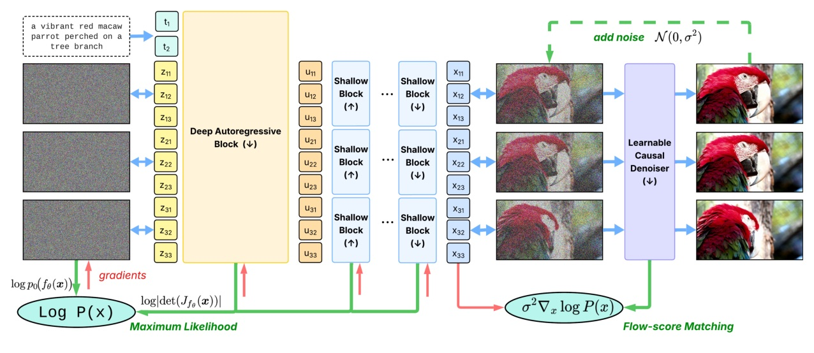
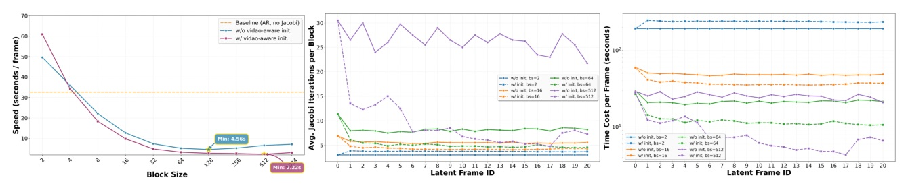
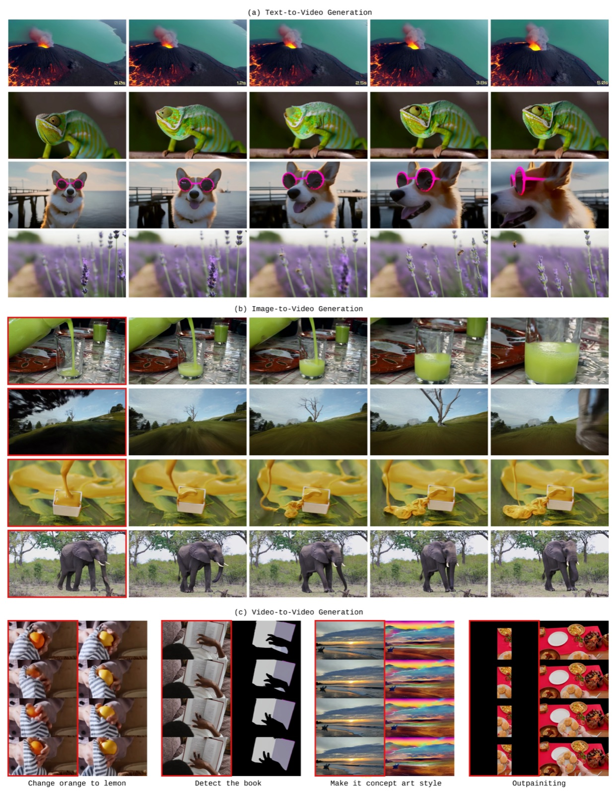
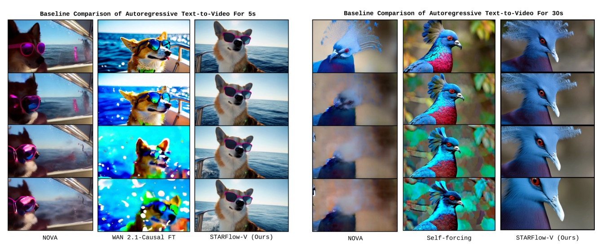
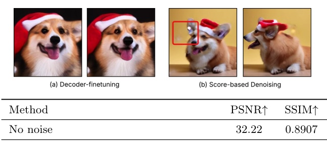
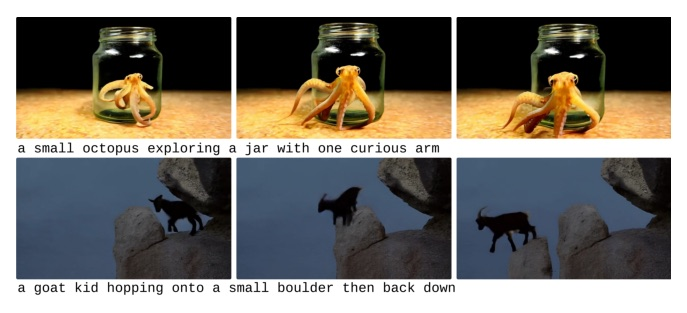
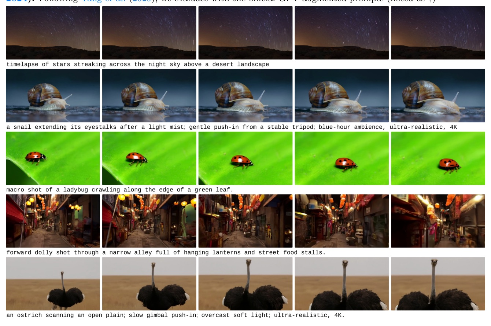
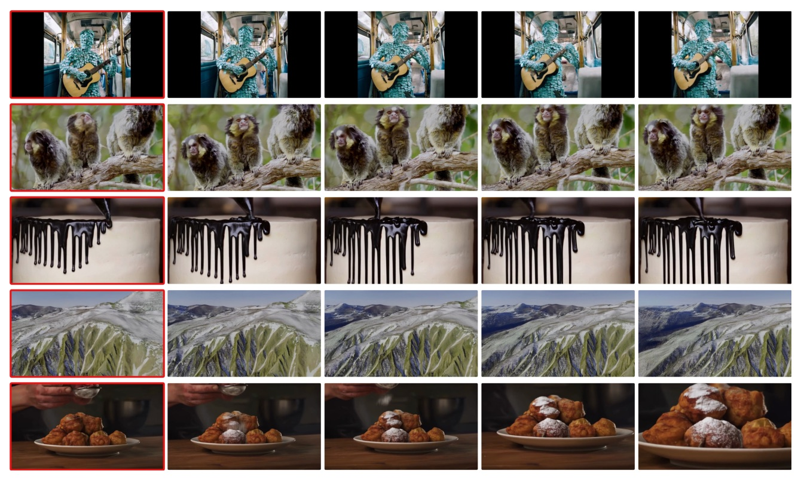

把可逆、likelihood-based 的 NF 重新帶回影片：一個可逆主幹原生支援 T2V / I2V / V2V，靠 global–local 架構、flow-score matching、block-wise Jacobi 推論（~15× 加速）三招，在 unimodal latent 上做時序推理，結構性繞開 AR diffusion 的 exposure-bias 累積誤差。

表達力 & 穩健性
訓練 & 串流


| Class | Model | VBench Total |
|---|---|---|
| Closed | Veo3 | 85.06 |
| Closed | Gen-3 | 82.32 |
| Diffusion | Wan2.1-T2V | 83.69 |
| Diffusion | HunyuanVideo | 83.24 |
| Diffusion | CogVideoX | 80.91 |
| AR-diffusion | Emu3 | 80.96 |
| AR-diffusion | NOVA | 80.12 |
| AR-diffusion | MAGI-1-distill | 77.92 |
| NF | STARFlow-V | 78.67 |
| NF | STARFlow-V† (Rewriter) | 79.70 |
尚未超越最強 diffusion，但已落在近期 causal/AR-diffusion baseline 同一區間，大幅收斂歷史上的 NF–diffusion 落差。非因果變體(79.22) ≈ 因果(79.70) → 強制因果在感知品質上幾乎零成本。

| Model | Total | Quality | Semantic | Aesthetic | Spatial |
|---|---|---|---|---|---|
| NOVA AR† | 75.31 | 77.46 | 66.70 | 56.04 | 66.07 |
| WAN 2.1-Causal FT† | 74.96 | 77.41 | 65.15 | 56.04 | 53.25 |
| STARFlow-V† (Ours) | 79.70 | 80.76 | 75.43 | 59.73 | 76.08 |
| Method | PSNR↑ | SSIM↑ |
|---|---|---|
| No noise (upper bound) | 32.22 | 0.8907 |
| Decoder fine-tuning | 23.95 | 0.6403 |
| Score-based (TARFlow) | 22.05 | 0.6490 |
| Flow-score matching (ours) | 26.69 | 0.7601 |

1000 段大動作影片的 VAE 重建：FSM 明顯優於兩個替代方案。Decoder fine-tuning → frame jitter；score-based → 大動作區亮點 speckle。
因為時序推理發生在 unimodal 的 latent，而非多模態 pixel：每一步是高斯 next-token 預測、條件在先前生成的 latent 而非 pixel——data-space 誤差無從傳播，結構性繞開 AR diffusion 的 exposure-bias 累積。這正是它撐到 30s 而 baseline 崩壞的真因。

A naïve port of the deep–shallow flow is non-causal, because the shallow flow fS propagates information from future frames to past ones. We restrict fS to operate within each frame; only the deep flow fD propagates global temporal context causally.
深淺 flow 的天真移植是非因果的，因為 shallow flow fS 會把資訊從未來 frame 傳到過去。我們把 fS 限制在每個 frame 內運作；只有 deep flow fD 因果地傳播全域時序脈絡。§3.1, p5–6
Sampling conditions on previously generated latents, not pixels, so data-space errors do not propagate — this mitigates the compounding error of autoregressive diffusion.
取樣條件在先前生成的 latent 而非 pixel，因此 data-space 誤差不會傳播——這緩解了自回歸 diffusion 的累積誤差。§3.1(b), p6
We train a lightweight causal neural denoiser sϕ to regress the model's score. The smoothness of the network suppresses high-frequency speckle, while causality is baked into sϕ with a one-frame look-ahead, keeping the system globally causal at one-step latency.
我們訓練一個輕量因果 neural denoiser sϕ 去回歸模型的 score。網路的平滑性壓掉高頻 speckle，而因果性被烤進 sϕ（一 frame look-ahead），讓系統在單步延遲下保持全域因果。§3.2, p6–7
We recast the autoregressive flow inversion as a fixed-point system solved by parallel Jacobi iteration: sequential across blocks, parallel within. Combined with video-aware initialization, this yields roughly 15× lower inference latency.
我們把自回歸 flow 反演重寫成不動點系統，用並行 Jacobi 迭代求解：塊間串行、塊內並行。結合 video-aware 初始化，得到約 15× 更低的推論延遲。§3.3, p7


STARFlow-V（Apple, CVPR 2026）證明 NF 能在影片站上與 AR diffusion 同檯，並在因果長序列上反超。明日預告：週四 · 計算加速（Attention / Kernel / 硬體）。